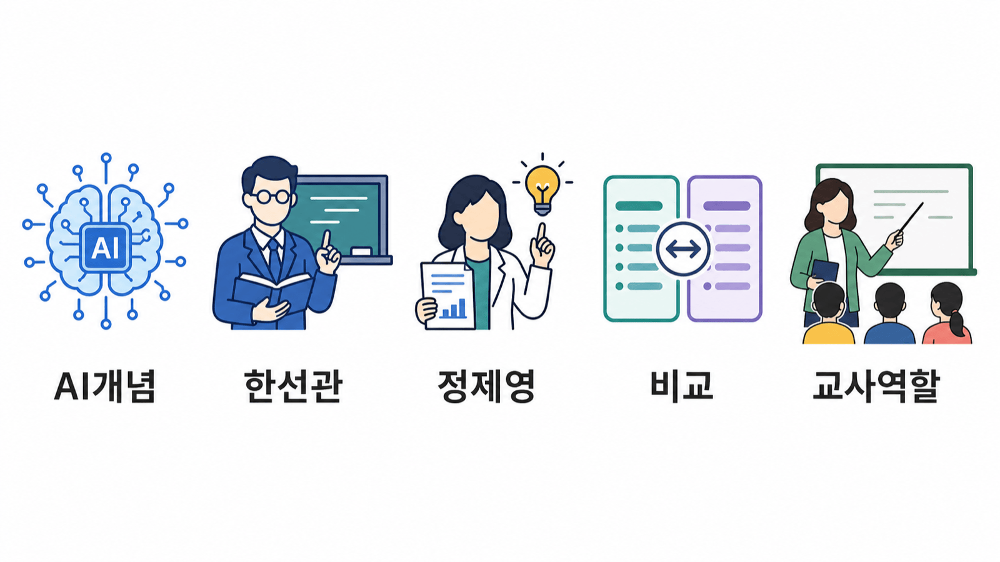
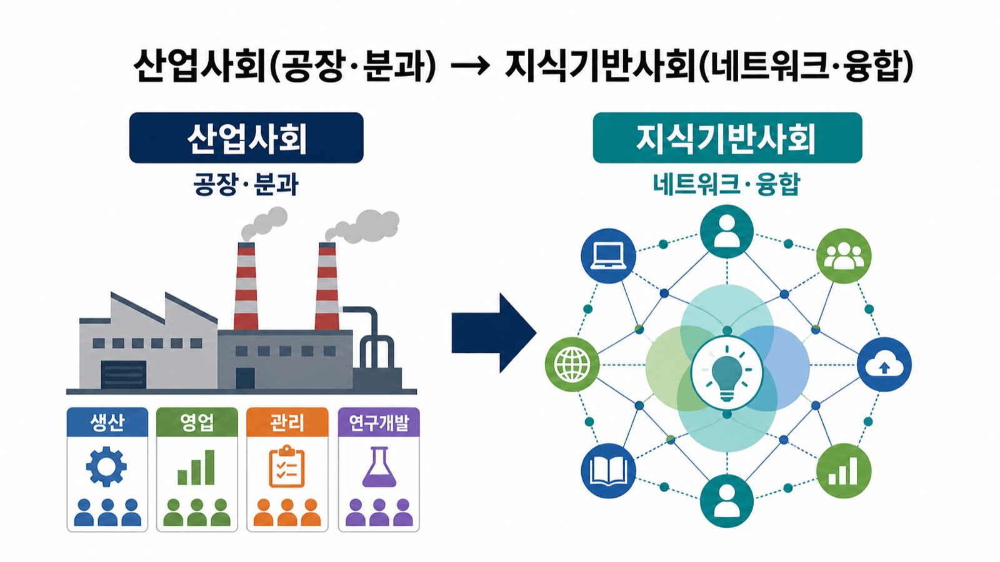
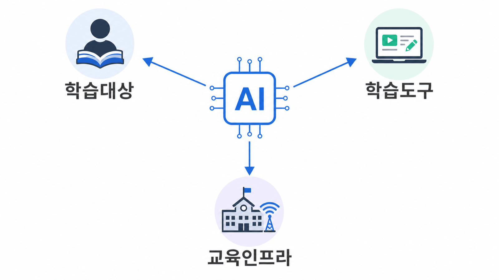
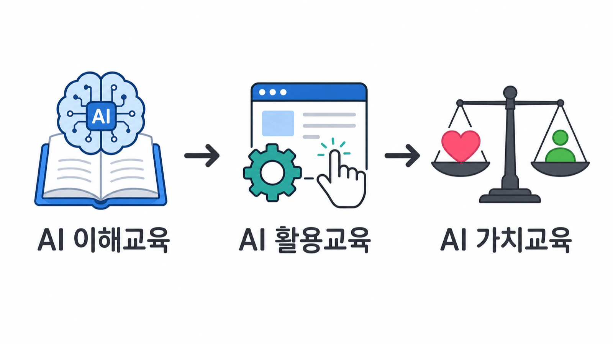
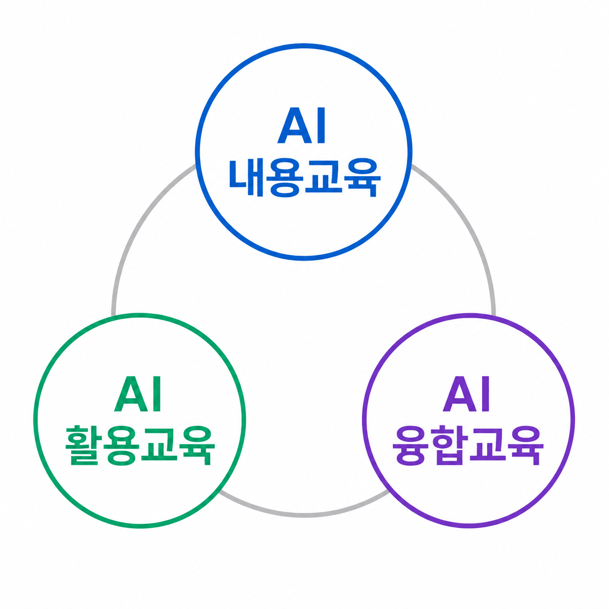
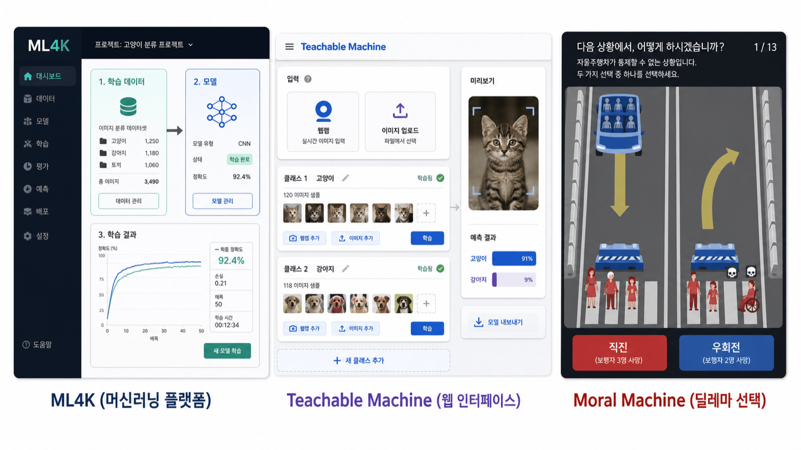
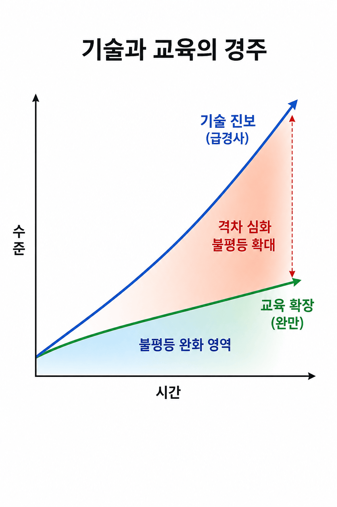

안내 질문: AI와 교육의 결합 방식이 다양한 이유는 무엇이며, 교사는 어떻게 구분해야 하는가?

P21 4Cs (P21, 2009): 핵심 교과 지식 위에 4Cs 등 21세기 역량을 함께 강조
| 역량 | 내용 |
|---|---|
| 비판적 사고 | 정보 분석·평가, 합리적 판단 |
| 의사소통 | 효과적 표현·이해·공유 |
| 협력 | 함께 사유하고 의미 창출 |
| 창의력 | 새로운 가치·해결책 생성 |

안내 질문: 한선관 외(2021)의 모델에서 '순차성'이 중요한 이유는 무엇인가?

| 유형 | 정의 | 예시 |
|---|---|---|
| AI 융합교육 | AI × 교과: 새로운 문제 해결 방식 창출 | 얼굴인식 졸음방지 시스템 제작 |
| AI 기반 교육 | 교수-학습 과정 자체를 AI로 지원 | AIDT AI 보조교사·AI 튜터 (9장) |
| AI 기반 교육시스템 | 학교 전체 수준 AI 시스템 통합 | 진단·처방·생기부 보조·집중도 분석 |
안내 질문: 정제영 외(2023)의 병렬 모델은 왜 '이해'를 '활용'의 선행 조건으로 보지 않는가?

| 범주 | 특징 | 핵심 |
|---|---|---|
| AI 내용교육 | AI에 대해 학습 | 이해가 목적, 정보·컴퓨터 교과 중심 |
| AI 활용교육 (교과) | AI를 도구로 사용 | 교과 목표가 주체, 개념 이해 불필요 |
| AI 활용교육 (에듀테크) | 교육 운영 전반에 AI 통합 | 학습 관리·성취 분석·피드백 자동화 |
| 유형 | 방식 | 예시 |
|---|---|---|
| 내용적 융합교육 | AI 개념·기술 + 교과 내용 결합 → 문제 해결 | 사회과: AI 예측 모델로 기후변화 대응 탐구 |
| 방법적 융합교육 | AI 도구 체험·활용 → 교과 간 문제 해결 | AI 이해 없이도 도구 활용 경험이 학습 방법 |
안내 질문: 두 모델이 '상충'이 아닌 '상보적'이라는 의미는 무엇인가?
| 구분 | 한선관 외(2021) | 정제영 외(2023) |
|---|---|---|
| 구조 유형 | 순차적 (이해→활용→가치) | 병렬적 (내용·활용·융합 독립) |
| 전제 철학 | 컴퓨터·정보교육 중심 | 공교육 보편성 중심 |
| 초점 영역 | AI 이해의 깊이·계열성 | AI교육의 폭·접근 가능성 |
| 교사에게 | 기술 이해 기반 비판적 활용 | 현실적 AI 활용 진입 허용 |

안내 질문: Goldin & Katz의 '기술-교육 경쟁' 프레임이 AI 시대에 어떻게 적용되는가?

| 원칙 | 내용 |
|---|---|
| 목표 우선 | AI 도구보다 교육 목표를 먼저 설계 (한선관 교과 활용 원칙) |
| 비판적 판단 | AI 제안 내용·방식을 전문적으로 평가 |
| 인간적 차원 | 학습자와의 관계·공동체·윤리 성찰을 교사가 이끔 |
| AI 문해 | 두 프레임워크를 교과·학교급·학습자에 맞게 선택적 적용 |
| 차원 | 한선관 외(2021) | 정제영 외(2023) | 공통 |
|---|---|---|---|
| AI 역할 | 학습 대상·심화 도구 | 도구·보편적 활용 수단 | 인간 성장의 수단 |
| 이해 전제 | 이해 후 활용 (순차) | 이해 없이도 가능 (병렬) | 교사 판단이 중심 |
| 최종 지향 | AI 가치·윤리 성찰 | 문제해결력 신장 | 기술이 아닌 인간 성장 |